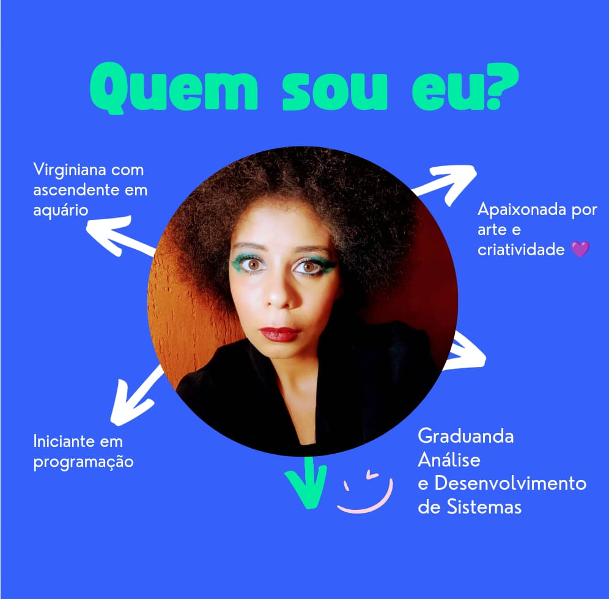

Oi, eu sou
Tatiane Caroline
Iniciante como desenvolvedora Front-end
Sobre mim

Sou uma apaixonada por arte no geral, filosofia, psicologia, multiartista amadora, estudante e iniciante em programação.
Gosto de pintar, desenhar, fazer origamis, cantar, atuar, ler, fazer sudokus, aprender coisas novas, assistir: filmes, séries e animes. Já escrevi poesias, e tenho um livro publicado chamado "Flores em coração cerrado" pela Padê Editorial e alguns zines feitos de maneira independente.
Seja bem-vindo ao meu portfólio, onde vou compartilhar meus aprendizados e experiências.